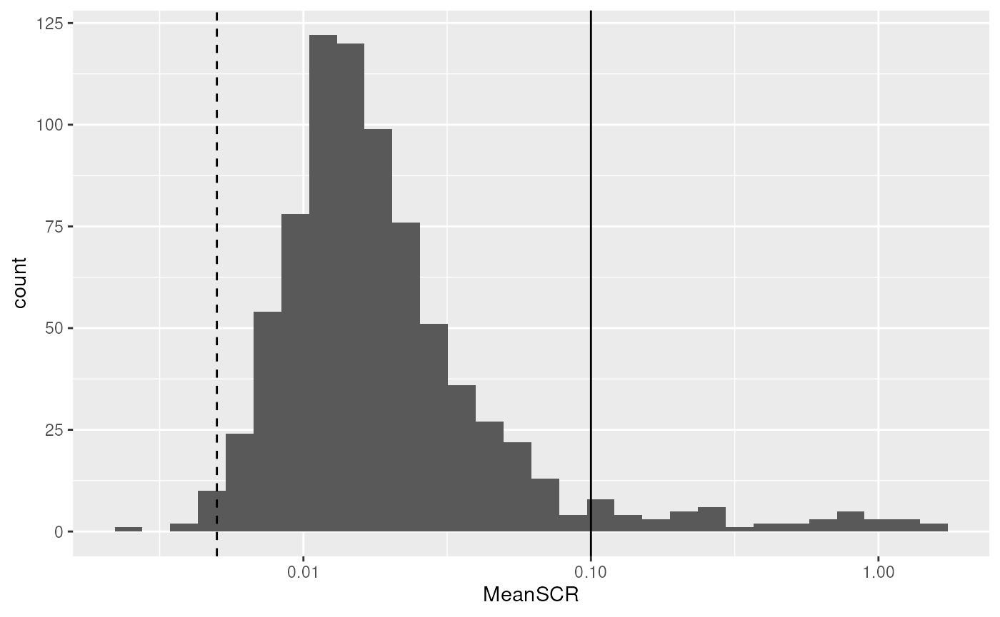
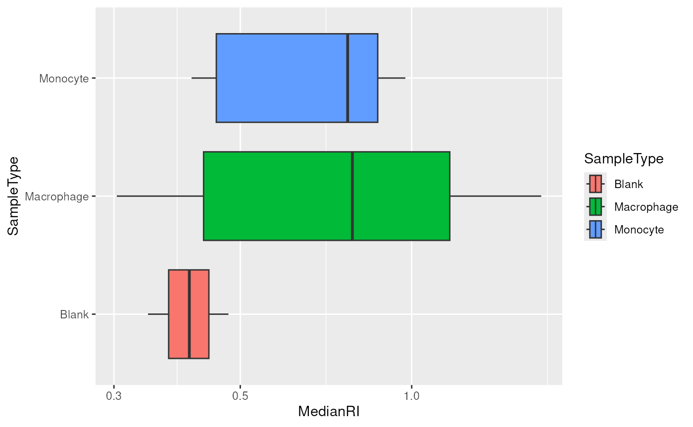
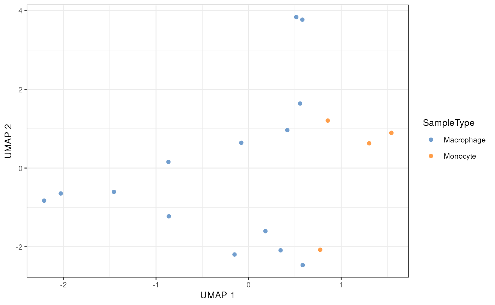

Single Cell Proteomics data processing and analysis.
Laurent Gatto
Christophe Vanderaa
9 September 2020
Source:vignettes/scp.Rmd
scp.Rmd
The scp package
The scp package is used to process and analyse mass spectrometry-based single cell proteomics (SCP) data. It relies on the QFeatures (Gatto (2020)) package to manage and process SingleCellExperiment (Lun and Risso (2020)) objects.

scp relies on SingleCellExperiment and QFeatures objects.
This vignette will guide you through the common steps of mass spectrometry-based single-cell proteomics data analysis. To start, we load the scp package.
We also load ggplot2, magrittr and dplyr for convenient data manipulation and plotting.
Read in SCP data
The workflow starts with reading in the tabular quantification data generated by, for example, MaxQuant (Cox and Mann (2008)). We created a small example data by subsetting the MaxQuant table provided in the SCoPE2 preprint (Specht et al. (2019)). The mqScpData table is a typical example of what you would get after reading in a CSV file using read.csv or read.table. See ?mqScpData for more information about the table content.
data("mqScpData") dim(mqScpData) #> [1] 1197 139 mqScpData[1:10, 1:5] #> Sequence Length Modifications Modified.sequence #> 1 AADPPAENSSAPEAEQGGAE 20 Unmodified _AADPPAENSSAPEAEQGGAE_ #> 2 AANLNSIIHR 10 Unmodified _AANLNSIIHR_ #> 3 AARATGLR 8 Unmodified _AARATGLR_ #> 4 AAVLLEQER 9 Unmodified _AAVLLEQER_ #> 5 AAYEAELGDAR 11 Unmodified _AAYEAELGDAR_ #> 6 AFEAVDK 7 Unmodified _AFEAVDK_ #> 7 AGESWDK 7 Unmodified _AGESWDK_ #> 8 AGLYGLPR 8 Unmodified _AGLYGLPR_ #> 9 AGQAVDDFIEK 11 Unmodified _AGQAVDDFIEK_ #> 10 AGQAVDDFIEK 11 Unmodified _AGQAVDDFIEK_ #> Deamidation..N..Probabilities #> 1 <NA> #> 2 <NA> #> 3 <NA> #> 4 <NA> #> 5 <NA> #> 6 <NA> #> 7 <NA> #> 8 <NA> #> 9 <NA> #> 10 <NA>
In order to convert this tabular data to a scp-compatible QFeatures object, we need to provide a metadata table where rows contain sample information and columns must contain at least:
- The name of the batch the sample was acquired in
- The name of the channel the sample was acquired in
Any additional information about the samples will be stored in the colData.
We provide an example of such a data frame. It was formatted from the annotation table provided in the SCoPE2 preprint. See ?sampleAnnotation for more information about the table content.
data("sampleAnnotation") sampleAnnotation #> Set Channel SampleType lcbatch sortday digest #> 1 190222S_LCA9_X_FP94BM RI1 Carrier LCA9 s8 N #> 2 190222S_LCA9_X_FP94BM RI2 Reference LCA9 s8 N #> 3 190222S_LCA9_X_FP94BM RI3 Unused LCA9 s8 N #> 4 190222S_LCA9_X_FP94BM RI4 Monocyte LCA9 s8 N #> 5 190222S_LCA9_X_FP94BM RI5 Blank LCA9 s8 N #> 6 190222S_LCA9_X_FP94BM RI6 Monocyte LCA9 s8 N #> 7 190222S_LCA9_X_FP94BM RI7 Macrophage LCA9 s8 N #> 8 190222S_LCA9_X_FP94BM RI8 Macrophage LCA9 s8 N #> 9 190222S_LCA9_X_FP94BM RI9 Macrophage LCA9 s8 N #> 10 190222S_LCA9_X_FP94BM RI10 Macrophage LCA9 s8 N #> 11 190222S_LCA9_X_FP94BM RI11 Macrophage LCA9 s8 N #> 12 190222S_LCA9_X_FP94BM RI12 Unused LCA9 s8 N #> 13 190222S_LCA9_X_FP94BM RI13 Unused LCA9 s8 N #> 14 190222S_LCA9_X_FP94BM RI14 Unused LCA9 s8 N #> 15 190222S_LCA9_X_FP94BM RI15 Unused LCA9 s8 N #> 16 190222S_LCA9_X_FP94BM RI16 Unused LCA9 s8 N #> 17 190321S_LCA10_X_FP97AG RI1 Carrier LCA10 s8 Q #> 18 190321S_LCA10_X_FP97AG RI2 Reference LCA10 s8 Q #> 19 190321S_LCA10_X_FP97AG RI3 Unused LCA10 s8 Q #> 20 190321S_LCA10_X_FP97AG RI4 Macrophage LCA10 s8 Q #> 21 190321S_LCA10_X_FP97AG RI5 Monocyte LCA10 s8 Q #> 22 190321S_LCA10_X_FP97AG RI6 Macrophage LCA10 s8 Q #> 23 190321S_LCA10_X_FP97AG RI7 Macrophage LCA10 s8 Q #> 24 190321S_LCA10_X_FP97AG RI8 Macrophage LCA10 s8 Q #> 25 190321S_LCA10_X_FP97AG RI9 Macrophage LCA10 s8 Q #> 26 190321S_LCA10_X_FP97AG RI10 Macrophage LCA10 s8 Q #> 27 190321S_LCA10_X_FP97AG RI11 Macrophage LCA10 s8 Q #> 28 190321S_LCA10_X_FP97AG RI12 Unused LCA10 s8 Q #> 29 190321S_LCA10_X_FP97AG RI13 Unused LCA10 s8 Q #> 30 190321S_LCA10_X_FP97AG RI14 Unused LCA10 s8 Q #> 31 190321S_LCA10_X_FP97AG RI15 Unused LCA10 s8 Q #> 32 190321S_LCA10_X_FP97AG RI16 Unused LCA10 s8 Q #> 33 190914S_LCB3_X_16plex_Set_21 RI1 Carrier LCB3 s9 R #> 34 190914S_LCB3_X_16plex_Set_21 RI2 Reference LCB3 s9 R #> 35 190914S_LCB3_X_16plex_Set_21 RI3 Unused LCB3 s9 R #> 36 190914S_LCB3_X_16plex_Set_21 RI4 Unused LCB3 s9 R #> 37 190914S_LCB3_X_16plex_Set_21 RI5 Macrophage LCB3 s9 R #> 38 190914S_LCB3_X_16plex_Set_21 RI6 Macrophage LCB3 s9 R #> 39 190914S_LCB3_X_16plex_Set_21 RI7 Blank LCB3 s9 R #> 40 190914S_LCB3_X_16plex_Set_21 RI8 Monocyte LCB3 s9 R #> 41 190914S_LCB3_X_16plex_Set_21 RI9 Macrophage LCB3 s9 R #> 42 190914S_LCB3_X_16plex_Set_21 RI10 Monocyte LCB3 s9 R #> 43 190914S_LCB3_X_16plex_Set_21 RI11 Blank LCB3 s9 R #> 44 190914S_LCB3_X_16plex_Set_21 RI12 Macrophage LCB3 s9 R #> 45 190914S_LCB3_X_16plex_Set_21 RI13 Macrophage LCB3 s9 R #> 46 190914S_LCB3_X_16plex_Set_21 RI14 Macrophage LCB3 s9 R #> 47 190914S_LCB3_X_16plex_Set_21 RI15 Macrophage LCB3 s9 R #> 48 190914S_LCB3_X_16plex_Set_21 RI16 Macrophage LCB3 s9 R #> 49 190321S_LCA10_X_FP97_blank_01 RI1 Blank LCA10 s8 <NA> #> 50 190321S_LCA10_X_FP97_blank_01 RI2 Blank LCA10 s8 <NA> #> 51 190321S_LCA10_X_FP97_blank_01 RI3 Blank LCA10 s8 <NA> #> 52 190321S_LCA10_X_FP97_blank_01 RI4 Blank LCA10 s8 <NA> #> 53 190321S_LCA10_X_FP97_blank_01 RI5 Blank LCA10 s8 <NA> #> 54 190321S_LCA10_X_FP97_blank_01 RI6 Blank LCA10 s8 <NA> #> 55 190321S_LCA10_X_FP97_blank_01 RI7 Blank LCA10 s8 <NA> #> 56 190321S_LCA10_X_FP97_blank_01 RI8 Blank LCA10 s8 <NA> #> 57 190321S_LCA10_X_FP97_blank_01 RI9 Blank LCA10 s8 <NA> #> 58 190321S_LCA10_X_FP97_blank_01 RI10 Blank LCA10 s8 <NA> #> 59 190321S_LCA10_X_FP97_blank_01 RI11 Blank LCA10 s8 <NA> #> 60 190321S_LCA10_X_FP97_blank_01 RI12 Blank LCA10 s8 <NA> #> 61 190321S_LCA10_X_FP97_blank_01 RI13 Blank LCA10 s8 <NA> #> 62 190321S_LCA10_X_FP97_blank_01 RI14 Blank LCA10 s8 <NA> #> 63 190321S_LCA10_X_FP97_blank_01 RI15 Blank LCA10 s8 <NA> #> 64 190321S_LCA10_X_FP97_blank_01 RI16 Blank LCA10 s8 <NA>
The two tables are supplied to the readSCP function.
scp <- readSCP(quantTable = mqScpData, metaTable = sampleAnnotation, channelCol = "Channel", batchCol = "Set") #> Loading data as a 'SingleCellExperiment' object #> Splitting data based on 'Set' #> Formating sample metadata (colData) #> Formating data as a 'QFeatures' object
As indicated by the output on the console, readSCP proceeds as follows:
If
quantTableis the path to a CSV file, it reads the file usingread.csv. The table is converted to aSingleCellExperimentobject.readSCPneeds to know in which field(s) the quantative data is stored. Those field name(s) is/are provided by thechannelColfield in themetaDatatable. So in this example, the column names hodling the quantitative data inmqScpDataare stored in the column namedChannelinsampleAnnotation.The
SingleCellExperimentobject is then split according to batch. The split is performed depending on thebatchColfield inquantTable, in this case the data will be split according to theSetcolumn inmqScpData.The sample metadata is generated from the
metaTable. Note that in order forreadSCPto correctly match the feature data with the metadata,metaTablemust also contain thebatchColfield with batch names.Finally, the split feature data and the sample metadata are stored in a single
QFeaturesobject.
Here is a compact overview of the data:
scp #> An instance of class QFeatures containing 4 assays: #> [1] 190222S_LCA9_X_FP94BM: SingleCellExperiment with 334 rows and 16 columns #> [2] 190321S_LCA10_X_FP97_blank_01: SingleCellExperiment with 109 rows and 16 columns #> [3] 190321S_LCA10_X_FP97AG: SingleCellExperiment with 433 rows and 16 columns #> [4] 190914S_LCB3_X_16plex_Set_21: SingleCellExperiment with 321 rows and 16 columns
We can see that the scp object we created is a QFeatures object containing 4 assays. Each assay has an associated name, this is the batch name that was used for splitting. We can also see that each assay is a SingleCellExperiment object. The rows represent the peptide to spectrum matches (PSMs), the number vary depending on the batch. Finally, all three assays contains 16 columns that correspond to the 16 TMT channels recorded during the 4 MS runs.
Clean missing data
Single-cell (proteomics or transcriptomics) data contains many zeros. The zeros can be biological zeros or technical zeros and differentiating between the two types is very hard. To avoid artefacts in dowstream steps, we replace the zeros by the missing value NA. The zeroIsNA function takes the QFeatures object and the name(s) or index/indices of the assay(s) to clean and automatically replaces any zero in the selected quantitative data by NA.
scp <- zeroIsNA(scp, i = 1:4)
Filter PSMs
A common steps in SCP is to filter out low-confidence PSMs. Each PSM assay contains feature meta-information that are stored in the assay’s rowData. The QFeatures package allows to quickly filter the rows of an assay by using these information. The available variables in the rowData are listed below for each assay.
rowDataNames(scp) #> CharacterList of length 4 #> [["190222S_LCA9_X_FP94BM"]] Sequence Length ... participated peptide #> [["190321S_LCA10_X_FP97_blank_01"]] Sequence Length ... participated peptide #> [["190321S_LCA10_X_FP97AG"]] Sequence Length ... participated peptide #> [["190914S_LCB3_X_16plex_Set_21"]] Sequence Length ... participated peptide
Filter features based on feature metadata
Below are some examples of criteria that are used to identify low-confidence. The information is readily available since this was computed by MaxQuant:
- Remove PSMs that are matched to contaminants
- Remove PSMs that are matched to the decoy database
- Keep PSMs that exhibit a high PIF (parental ion fraction), indicative of the purity of a spectrum
We can perform this filtering using the filterFeatures function. filterFeatures automatically accesses the feature metadata and selects the rows that meet the provided condition(s). For instance, Reverse != "+" keeps the rows for which the Reverse variable in the rowData is not "+" (i.e. the PSM is not matched to the decoy database).
Filter assays based on detected features
To avoid proceeding with failed runs, another interesting filter is to remove assays with too few features. If a batch contains less than, for example, 150 features we can then suspect something wrong happened in that batch and it should be removed. Using dims, we can query the dimensions (hence the number of features and the number of samples) of all assays contained in the dataset.
dims(scp) #> 190222S_LCA9_X_FP94BM 190321S_LCA10_X_FP97_blank_01 190321S_LCA10_X_FP97AG #> [1,] 253 57 282 #> [2,] 16 16 16 #> 190914S_LCB3_X_16plex_Set_21 #> [1,] 183 #> [2,] 16
Actually, a QFeatures object can be seen as a three-order array: \(features \times samples \times assay\). Hence, QFeatures supports three-order subsetting x[rows, columns, assays]. We first select the assay that have sufficient PSMs (the number of rows is greater than 150), and then subset the scp object for the assays that meet the criterion.
keepAssay <- dims(scp)[1, ] > 150 scp <- scp[, , keepAssay] #> harmonizing input: #> removing 16 sampleMap rows not in names(experiments) #> removing 16 colData rownames not in sampleMap 'primary' scp #> An instance of class QFeatures containing 3 assays: #> [1] 190222S_LCA9_X_FP94BM: SingleCellExperiment with 253 rows and 16 columns #> [2] 190321S_LCA10_X_FP97AG: SingleCellExperiment with 282 rows and 16 columns #> [3] 190914S_LCB3_X_16plex_Set_21: SingleCellExperiment with 183 rows and 16 columns
Notice the 190321S_LCA10_X_FP97_blank_01 sample was removed because it did not contain sufficient features, as expected from a blank sample. This could also have been the case for failed runs.
Filter features based on SCP metrics
Another type of filtering is specific to SCP. In the SCoPE2 analysis, the authors suggest a filters based on the sample to carrier ratio (SCR), that is the reporter ion intensity of a single-cell sample divided by the reporter ion intensity of the carrier channel (200 cells) from the same batch. It is expected that the carrier intensities are much higher than the single-cell intensities.
The SCR can be computed using the computeSCR function from scp. The function must be told which channels are the samples that must be divided and which channel contains the carrier. This information is provided in the sample metadata and is accessed using the colData, under the SampleType field.
colData(scp)[, "SampleType"] %>% table #> . #> Blank Carrier Macrophage Monocyte Reference Unused #> 3 3 20 5 3 14
In this dataset, SampleType gives the type of sample that is present in each TMT channel. The SCoPE2 protocole includes 5 types of samples:
- The carrier channels (
Carrier) contain 200 cell equivalents and are meant to boost the peptide identification rate. - The normalization channels (
Reference) contain 5 cell equivalents and are used to partially correct for between-run variation. - The unused channels (
Unused) are channels that are left empty due to isotopic cross-contamination by the carrier channel. - The blank channels (
Blank) contain samples that do not contain any cell but are processed as single-cell samples. - The single-cell sample channels contain the single-cell samples of interest, that are macrophage (
Macrophage) or monocyte (Monocyte).
The computeSCR function expects the following input:
- The
QFeaturesdataset - The assay name(s) or index/indices for which the SCR should be computed
- The sample metadata variable pointing to the channel annotation
- A string pattern (following regular expression syntax) that uniquely identifies the carrier channel in each batch
- A string pattern (following regular expression syntax) that identifies the samples to divide
The function creates an field .meanSCR and stores it in the rowData of each assay.
scp <- computeSCR(scp, i = 1:3, colDataCol = "SampleType", carrierPattern = "Carrier", samplePattern = "Macrophage|Monocyte")
Before applying the filter, we plot the distribution of the average SCR. We can extract the .meanSCR variable from the rowData of several assays using the rowDataToDF. It takes the rowData field(s) of interest and returns a DataFrame table.
scp %>% rowDataToDF(i = 1:3, vars = ".meanSCR") %>% data.frame %>% ggplot(aes(x = .meanSCR)) + geom_histogram() + geom_vline(xintercept = 0.1)

Most values are close to 0.02 as expected since the experimental ratio is 1/200. There are a few point that have higher signal than expected. We therefore filter out those points using a cutoff of 0.1 using again the filterFeatures functions.
scp <- filterFeatures(scp, ~ !is.na(.meanSCR) & .meanSCR < 0.1)
Filter out PSMs with high false discovery rate
Finally, a last PSM filter criterion is the false discovery rate (FDR) for identification. Filtering on the PEP is too conservative (Käll et al. (2008)) so we provide the computeFDR function to convert PEPs to FDR. Beside the dataset and the assay(s) for which to compute the FDR, we also need to give the feature grouping variable, here the peptide sequence, and the variable containing the PEPs. Those are contained in the feature metadata.
scp <- computeFDR(scp, i = 1:3, groupCol = "peptide", pepCol = "dart_PEP")
Note that a new variable .FDR containing the computed FDRs is added to the rowData. We filter the PSMs that have an associated peptide FDR smaller than 1%.
scp <- filterFeatures(scp, ~ .FDR < 0.01)
Process the PSM data
Relative reporter ion intensity
In order to partialy correct for between-run variation, SCoPE2 suggests computing relative reporter ion intensities. This means that intensities measured for single-cells are divided by the reference channel containing 5-cell equivalents. We use the divideByReference function that divides channels of interest by the reference channel. Similarly to computeSCR, we can point to the samples and the reference columns in each assay using the annotation contained in the colData.
We here divide all columns (using the regular expression wildcard .) by the reference channel (Reference).
scp <- divideByReference(scp, i = 1:3, colDataCol = "SampleType", samplePattern = ".", refPattern = "Reference")
Aggregate PSM data to peptide data
Now that the PSM assays are processed, we can aggregate them to peptides. This is performed using the aggregateFeaturesOverAssays function. For each assay, the function aggregates several PSMs into a unique peptide. This is best illustrated by the figure below.

Conceptual illustration of feature aggregation.
Remember there currently are three assays containing the PSM data.
scp #> An instance of class QFeatures containing 3 assays: #> [1] 190222S_LCA9_X_FP94BM: SingleCellExperiment with 216 rows and 16 columns #> [2] 190321S_LCA10_X_FP97AG: SingleCellExperiment with 240 rows and 16 columns #> [3] 190914S_LCB3_X_16plex_Set_21: SingleCellExperiment with 142 rows and 16 columns
The PSMs are aggregated over the fcol feature variable, here peptides. We also need to supply an aggregating function that will tell how to combine the quantitative data of the PSMs to aggregate. We here use the median value. We name the aggregated assays using the original names and appending peptides_ at the start.
scp <-aggregateFeaturesOverAssays(scp, i = 1:3, fcol = "peptide", name = paste0("peptides_", names(scp)), fun = matrixStats::colMedians, na.rm = TRUE)
Notice that 3 new assays were created in the scp object. Those new assays contain the aggregated features while the three first assays are unchanged. This allows to keep track of the data processing.
scp #> An instance of class QFeatures containing 6 assays: #> [1] 190222S_LCA9_X_FP94BM: SingleCellExperiment with 216 rows and 16 columns #> [2] 190321S_LCA10_X_FP97AG: SingleCellExperiment with 240 rows and 16 columns #> [3] 190914S_LCB3_X_16plex_Set_21: SingleCellExperiment with 142 rows and 16 columns #> [4] peptides_190222S_LCA9_X_FP94BM: SingleCellExperiment with 214 rows and 16 columns #> [5] peptides_190321S_LCA10_X_FP97AG: SingleCellExperiment with 240 rows and 16 columns #> [6] peptides_190914S_LCB3_X_16plex_Set_21: SingleCellExperiment with 142 rows and 16 columns
Under the hood, the QFeatures architecture preserves the relationship between the aggregated assays. See ?AssayLinks for more information on relationships between assays.
Join the SCoPE2 sets in one assay
Up to now, we kept the data belonging to each MS run in separate assays. We now combine all batches into a single assay. This is done using the joinAssays function from the QFeatures package. Note that we now use the aggregated assays, so assay 4 to 6.
scp <- joinAssays(scp, i = 4:6, name = "peptides") #> harmonizing input: #> removing 48 sampleMap rows not in names(experiments)
In this case, one new assay is created in the scp object that combines the data from assay 4 to 6. The samples are always distinct so the number of column in the new assay (here \(48\)) will always equals the sum of the columns in the assays to join (here \(16 + 16 + 16\)). The feature in the joined assay might contain less features than the sum of the rows of the assays to join since common features between assays are joined in a single row.
scp #> An instance of class QFeatures containing 7 assays: #> [1] 190222S_LCA9_X_FP94BM: SingleCellExperiment with 216 rows and 16 columns #> [2] 190321S_LCA10_X_FP97AG: SingleCellExperiment with 240 rows and 16 columns #> [3] 190914S_LCB3_X_16plex_Set_21: SingleCellExperiment with 142 rows and 16 columns #> [4] peptides_190222S_LCA9_X_FP94BM: SingleCellExperiment with 214 rows and 16 columns #> [5] peptides_190321S_LCA10_X_FP97AG: SingleCellExperiment with 240 rows and 16 columns #> [6] peptides_190914S_LCB3_X_16plex_Set_21: SingleCellExperiment with 142 rows and 16 columns #> [7] peptides: SingleCellExperiment with 358 rows and 48 columns
Filter single-cells
Another common step in single-cell data analysis pipelines is to remove low-quality cells. After subseting for the samples of interest, we will use 2 metrics: the median relative intensities per cell and the median coefficient of variation (CV) per cell.
Filter samples of interest
We first subset the cells of interest, that is the blank samples (sc_0), the macrophages (sc_m0) and the monocytes (sc_u).
We extract the SingleCellExperiment assay with the joined peptides, subset the channels corresponding to blank, macrophage or monocytes and add it as a new assay in the QFeatures object. However, the sample annotation is contained in the colData of the QFeatures dataset, but we need to access it from the SingeCellExperiment object. Therefore, we provide the transferColDataToAssay to copy the sample metadata from the QFeatures to a target assay.
colData(scp[["peptides"]]) #> DataFrame with 48 rows and 0 columns scp <- transferColDataToAssay(scp, "peptides") colData(scp[["peptides"]]) #> DataFrame with 48 rows and 6 columns #> Set Channel SampleType #> <character> <character> <character> #> 190222S_LCA9_X_FP94BM_RI1 190222S_LC... RI1 Carrier #> 190222S_LCA9_X_FP94BM_RI2 190222S_LC... RI2 Reference #> 190222S_LCA9_X_FP94BM_RI3 190222S_LC... RI3 Unused #> 190222S_LCA9_X_FP94BM_RI4 190222S_LC... RI4 Monocyte #> 190222S_LCA9_X_FP94BM_RI5 190222S_LC... RI5 Blank #> ... ... ... ... #> 190914S_LCB3_X_16plex_Set_21_RI12 190914S_LC... RI12 Macrophage #> 190914S_LCB3_X_16plex_Set_21_RI13 190914S_LC... RI13 Macrophage #> 190914S_LCB3_X_16plex_Set_21_RI14 190914S_LC... RI14 Macrophage #> 190914S_LCB3_X_16plex_Set_21_RI15 190914S_LC... RI15 Macrophage #> 190914S_LCB3_X_16plex_Set_21_RI16 190914S_LC... RI16 Macrophage #> lcbatch sortday digest #> <character> <character> <character> #> 190222S_LCA9_X_FP94BM_RI1 LCA9 s8 N #> 190222S_LCA9_X_FP94BM_RI2 LCA9 s8 N #> 190222S_LCA9_X_FP94BM_RI3 LCA9 s8 N #> 190222S_LCA9_X_FP94BM_RI4 LCA9 s8 N #> 190222S_LCA9_X_FP94BM_RI5 LCA9 s8 N #> ... ... ... ... #> 190914S_LCB3_X_16plex_Set_21_RI12 LCB3 s9 R #> 190914S_LCB3_X_16plex_Set_21_RI13 LCB3 s9 R #> 190914S_LCB3_X_16plex_Set_21_RI14 LCB3 s9 R #> 190914S_LCB3_X_16plex_Set_21_RI15 LCB3 s9 R #> 190914S_LCB3_X_16plex_Set_21_RI16 LCB3 s9 R
Once the metadata is transfered, we can subset the SingleCellExperiment assay.
sce <- scp[["peptides"]] sce <- sce[, sce$SampleType %in% c("Blank", "Macrophage", "Monocyte")]
Then we add this assay back into the QFeatures object. This is done using the addAssay function. We also preserve the links between dfeatures using the addAssayLinkOneToOne. Since the features did not change (only the samples did), one-to-one links between features are added.
scp %>% addAssay(y = sce, name = "peptides_filter1") %>% addAssayLinkOneToOne(from = "peptides", to = "peptides_filter1") -> scp
Note the added assay peptides_filter1 contains the same number of rows than its parent assay peptides, but less samples as 20 samples are not single-cells or blank samples bu rather unused, reference or carrier samples.
scp #> An instance of class QFeatures containing 8 assays: #> [1] 190222S_LCA9_X_FP94BM: SingleCellExperiment with 216 rows and 16 columns #> [2] 190321S_LCA10_X_FP97AG: SingleCellExperiment with 240 rows and 16 columns #> [3] 190914S_LCB3_X_16plex_Set_21: SingleCellExperiment with 142 rows and 16 columns #> ... #> [6] peptides_190914S_LCB3_X_16plex_Set_21: SingleCellExperiment with 142 rows and 16 columns #> [7] peptides: SingleCellExperiment with 358 rows and 48 columns #> [8] peptides_filter1: SingleCellExperiment with 358 rows and 28 columns
Filter based on the median relative intensity
We compute the median relative reporter ion intensity for each cell separately and apply a filter based on this statistic. This procedure recalls that of library size filtering commonly performed in scRNA-Seq data analysis, where the library size is the sum of the counts in each single cell. We will store the median intensity in the colData of the peptides_filter1 assay (so the SingleCellExperiment object) because this metric is specific to that assay. The medians are computed on the quantitative data using colMedians that requires a data matrix. The data matrix can be extracted from a SingleCellExperiment using the assay function.
scp[["peptides_filter1"]] %>% assay %>% matrixStats::colMedians(na.rm = TRUE) -> scp[["peptides_filter1"]]$MedianRI
Looking at the distribution of the median per cell can highlight low-quality cells.
scp[["peptides_filter1"]] %>% colData %>% data.frame %>% ggplot(aes(x = MedianRI, fill = SampleType)) + geom_boxplot() + scale_x_log10()

Here all values seems reasonable so no filtering is needed. If it were not the case, the same procedure as the previous section can be used for selecting the cells that have an associated median RI lower that a defined threshold.
Filter based on the median CV
The median CV measures the consistency of quantification for a group of peptides that belong to a protein. We remove cells that exhibit high median CV over the different proteins. We compute the median CV per cell using the computeMedianCV function from the scp package. The function takes the peptides_filter1 assay, protein and peptide information from the assay rowData, and the batch names in the colData of the QFeatures object. The peptide and batch information are required to perform normalization prior to the CV computation. Protein information is required since the CV are computed at the protein level. The computed median CVs are automatically stored in the colData of the SingleCellExperiment assay under the .medianCV field
scp <- computeMedianCV(scp, i = "peptides_filter1", proteinCol = "protein", peptideCol = "peptide", batchCol = "Set")
The computed CVs are stored in the colData of the peptides_filter1 assay and holds the median CV per cell computed using at least 5 observations (peptides). The main interest of computing the median CV per cell is to filter cells with reliable quantification. The blank samples are not expected to have reliable quantifications and hence can be used to estimate an empirical null distribution of the CV. This distribution helps defining a threshold that filters out single-cells that contain noisy quantification.
scp[["peptides_filter1"]] %>% colData %>% data.frame %>% ggplot(aes(x = .MedianCV, fill = SampleType)) + geom_boxplot() + geom_vline(xintercept = 0.3)
We can see that the protein quantifiation for single-cells are much more consistent within cells than witin the blank channels. Based on the distribution of the blanks, we decide to keep the cells that have a median CV lower than 0.3. Note this example is inaccurate because the null distribution is based on only 3 blank samples, but more sets could lead to a better estimation of the CV null distribution. Note we also keep only the samples of interest (macrophages and monocytes) since all QC metrics are now computed.
keepSample <- scp[["peptides_filter1"]]$.MedianCV < 0.3 & scp[["peptides_filter1"]]$SampleType %in% c("Macrophage", "Monocyte") keepSample[is.na(keepSample)] <- FALSE
Then, we subset the assay for samples that pass the filter.
sce <- scp[["peptides_filter1"]] sce <- sce[, keepSample]
Finally, we add the filtered assay to the QFeaturesobject and created the required linking with the previous assay.
addAssay(scp, y = sce, name = "peptides_filter2") %>% addAssayLinkOneToOne(from = "peptides_filter1", to = "peptides_filter2") -> scp
Process the peptide data
In this vignette, the peptide data are further processed before aggregation to proteins. The steps are: normalization, filter peptides based on missing data and log-transformation.
Normalization
The columns (samples) of the peptide data are first normalized by dividing the relative intensities by the median relative intensities. Then, the rows (peptides) are normalized by dividing the relative intensities by the mean relative intensities. The normalized data is stored in a separate assay. This normalization procedure is suggested in the SCoPE2 analysis and is applied using the sweep method. Beside the dataset and the assay to normalize, the method expects a MARGIN, that is either row-wise (1) or column-wise (2) transformation, the FUN function to apply and STATS, a vector of values to apply. More conventional normalization procedure can be found in ?QFeatures::normalize.
scp %>% ## Divide columns by median sweep(i = "peptides_filter2", MARGIN = 2, FUN = "/", STATS = colMedians(assay(scp[["peptides_filter2"]]), na.rm = TRUE), name = "peptides_norm_col") %>% ## Divide rows by mean sweep(i = "peptides_norm_col", MARGIN = 1, FUN = "/", STATS = rowMeans(assay(.[["peptides_norm_col"]]), na.rm = TRUE), name = "peptides_norm") -> scp
Notice each call to sweep created a new assay.
scp #> An instance of class QFeatures containing 11 assays: #> [1] 190222S_LCA9_X_FP94BM: SingleCellExperiment with 216 rows and 16 columns #> [2] 190321S_LCA10_X_FP97AG: SingleCellExperiment with 240 rows and 16 columns #> [3] 190914S_LCB3_X_16plex_Set_21: SingleCellExperiment with 142 rows and 16 columns #> ... #> [9] peptides_filter2: SingleCellExperiment with 358 rows and 15 columns #> [10] peptides_norm_col: SingleCellExperiment with 358 rows and 15 columns #> [11] peptides_norm: SingleCellExperiment with 358 rows and 15 columns
Remove peptides with high missing rate
Peptides that contain many missing values are not informative. Therefore, another common procedure is to remove higly missing data. In this example, we remove peptides with more than 99 % missing data. This is done using the filterNA function from QFeatures.
scp <- filterNA(scp, i = "peptides_norm", pNA = 0.99)
Log-transformation
In this vignette, we perform log2-transformation using the logTransform method from QFeatures. Other log-transformation can be applied by changing the base argument.
scp <- logTransform(scp, base = 2, i = "peptides_norm", name = "peptides_log")
Similarly to sweep, logTransform creates a new assay in scp.
Aggregate peptide data to protein data
Similarly to aggregating PSM data to peptide data, we can aggregate peptide data to protein data using the aggregateFeatures function.
scp <- aggregateFeatures(scp, i = "peptides_log", name = "proteins", fcol = "protein", fun = matrixStats::colMedians, na.rm = TRUE) #> Your quantitative and row data contain missing values. Please read the #> relevant section(s) in the aggregateFeatures manual page regarding the #> effects of missing values on data aggregation.
The only difference between aggregateFeatures and aggregateFeaturesOverAssays is that the second function can aggregate several assay at once whereas the former only takes one assay to aggregate. Hence, only a single assay, proteins, was created in the scp object.
scp #> An instance of class QFeatures containing 13 assays: #> [1] 190222S_LCA9_X_FP94BM: SingleCellExperiment with 216 rows and 16 columns #> [2] 190321S_LCA10_X_FP97AG: SingleCellExperiment with 240 rows and 16 columns #> [3] 190914S_LCB3_X_16plex_Set_21: SingleCellExperiment with 142 rows and 16 columns #> ... #> [11] peptides_norm: SingleCellExperiment with 348 rows and 15 columns #> [12] peptides_log: SingleCellExperiment with 348 rows and 15 columns #> [13] proteins: SingleCellExperiment with 89 rows and 15 columns
After the second aggregation, the proteins assay in this example contains quantitative information for 89 proteins in 15 single-cells.
Process the protein data
The protein data is further processed in three steps: normalization, imputation (using the KNN algorithm) and batch correction (using the ComBat algorithm).
Normalization
Normalization is performed similarly to peptide normalization. We use the same functions, but since the data were log-transformed at the peptide level, we subtract by the statistic (median or mean) instead of dividing.
scp %>% ## Center columns with median sweep(i = "proteins", MARGIN = 2, FUN = "-", STATS = colMedians(assay(scp[["proteins"]]), na.rm = TRUE), name = "proteins_norm_col") %>% ## Center rows with mean sweep(i = "proteins_norm_col", MARGIN = 1, FUN = "-", STATS = rowMeans(assay(.[["proteins_norm_col"]]), na.rm = TRUE), name = "proteins_norm") -> scp
Imputation
The protein data contains a lot of missing values.
scp[["proteins_norm"]] %>% assay %>% is.na %>% mean #> [1] 0.2606742
The average missingness in the proteins assay is around 25 %. Including more samples and hence more batches can increase the missingness up to 70 % as seen for the complete SCoPE2 dataset (Specht et al. (2019)). Whether imputation is beneficial or deleterious for the data will not be discussed in this vignette. But taking those missing value into account is essential to avoid artefacts in downstream analyses. The data imputation is performed using the K nearest neighbors algorithm, with k = 3. This is available from the impute mehtod. More details about the arguments can be found in ?impute::impute.knn.
scp <- impute(scp, i = "proteins_norm", method = "knn", k = 3, rowmax = 1, colmax= 1, maxp = Inf, rng.seed = 1234) #> Loading required namespace: impute
Note that after imputation, no value are missing.
scp[["proteins_norm"]] %>% assay %>% is.na %>% mean #> [1] 0
Batch correction
A very important step for processing SCP data is to correct for batch effects. Batch effects are caused by technical variation occuring during different MS runs. Since only a small number of single-cells can be acquired at once, batch effects are unavoidable.
The ComBat function from the sva package can be used to perform batch correction as it is performed in the SCoPE2 analysis. We do not claim that ComBat is the best algorithm for batch correcting SCP data and other batch correcting methods could be used using the same procedure.
We first extract the assay to process.
scp <- transferColDataToAssay(scp, i = "proteins_norm") sce <- scp[["proteins_norm"]]
Next, we need to provide a design matrix and the batch annotation to Combat. The design matrix allows to protect variables of interest, in our case SampleType.
batch <- colData(sce)$Set model <- model.matrix(~ SampleType, data = colData(sce))
We then load and call ComBat and overwrite the data matrix. Recall the data matrix can be accessed using the assay function.
Finally, we add the batch corrected assay to the QFeatures object and create the feature links.
addAssay(scp, y = sce, name = "proteins_batchC") %>% addAssayLinkOneToOne(from = "proteins_norm", to = "proteins_batchC") -> scp
Dimension reduction
Because each assay contains SingelCellExperiment objects, we can easily apply methods developed in the scRNA-Seq field. A useful package for dimension reduction on single-cell data is the scater.
This package provides streamline functions to computes various dimension reduction such as PCA, UMAP, t-SNE, NMF, MDS, ….
PCA
PCA can be computed using the runPCA method. It returns a SingleCellExperiment object for which the dimension reduction results are stored in the reducedDim slot.
scp[["proteins_batchC"]] <- runPCA(scp[["proteins_batchC"]], ncomponents = 50, ntop = Inf, scale = TRUE, exprs_values = 1, name = "PCA")
The computed PCA can be displayed using the plotReducedDim function. The dimred arguments should give the name of the dimension reduction results to plot, here we called it PCA. The samples are colored by type of sample.
plotReducedDim(scp[["proteins_batchC"]], dimred = "PCA", colour_by = "SampleType")

This is a minimalistic example with only a few plotted cells, but the original SCoPE2 dataset contained more than thousand cells.
UMAP
Similarly to PCA, we can compute a UMAP using the runUMAP method. Note however that the UMAP implementation requires a initialization, usually provided by PCA. The previous PCA results are used automatically when supplying dimred = "PCA" (PCA is the name of the dimension reduction result that we supplied in the previous section).
scp[["proteins_batchC"]] <- runUMAP(scp[["proteins_batchC"]], ncomponents = 2, ntop = Inf, scale = TRUE, exprs_values = 1, n_neighbors = 3, dimred = "PCA", name = "UMAP")
The computed UMAP can be displayed using the plotReducedDim function. The dimred arguments gives the name of the dimension reduction results to plot, here we called it UMAP. The samples are colored by type of sample.
plotReducedDim(scp[["proteins_batchC"]], dimred = "UMAP", colour_by = "SampleType")

The UMAP plot is a very interesting plot for large datasets. A UMAP on this small example dataset is not useful but is shown for illustration.
Monitoring data processing
The QFeatures plot shows the quantitative data for a features at the different expression levels. For instance, suppose we are interested in the protein LMNA (protein ID is P02545). A useful QC is to monitor the data processing at the PSM, peptide and protein level. This can easily be done thanks to the QFeatures framework. Using the subsetByFeature, we can extract the protein of interest and its related features in the other assays. The data is formated to a long format table that can easily be plugged in the ggplot2 visualization tool.
scp %>% ## Get the features related to LMNA (P02545) subsetByFeature("P02545") %>% ## Format the `QFeatures` to a long format table longFormat(colDataCols = c("Set", "SampleType", "Channel")) %>% data.frame %>% ## This is used to preserve ordering of the samples and assays in ggplot2 mutate(assay = factor(assay, levels = names(scp)), Channel = sub("RI", "TMT-", Channel), Channel = factor(Channel, levels = unique(Channel))) %>% ## Start plotting ggplot(aes(x = Channel, y = value, group = rowname, col = SampleType)) + geom_point() + ## Plot every assay in a separate facet facet_wrap(facets = vars(assay), scales = "free_y", ncol = 3) + ## Annotate plot xlab("Channels") + ylab("Intensity (arbitrary units)") + ## Improve plot aspect theme(axis.text.x = element_text(angle = 90), strip.text = element_text(hjust = 0), legend.position = "bottom")

This graph helps to keep track of the data processing and highlights anomalies in the data. For instance, we can see that no data were recorded for 5 channels (TMT-12 to 16). Those channels contain either macrophages or monocytes (from the experimental design) and are expected to contain information. Thanks to this diagnostic plot, we reported the issue to Specht and colleagues and this led to version 3 of the SCoPE2 dataset.
Session information
R version 4.0.2 Patched (2020-09-02 r79126)
Platform: x86_64-pc-linux-gnu (64-bit)
Running under: Ubuntu 20.04.1 LTS
Matrix products: default
BLAS/LAPACK: /usr/lib/x86_64-linux-gnu/openblas-openmp/libopenblasp-r0.3.8.so
locale:
[1] LC_CTYPE=en_US.UTF-8 LC_NUMERIC=C
[3] LC_TIME=en_US.UTF-8 LC_COLLATE=en_US.UTF-8
[5] LC_MONETARY=en_US.UTF-8 LC_MESSAGES=C
[7] LC_PAPER=en_US.UTF-8 LC_NAME=C
[9] LC_ADDRESS=C LC_TELEPHONE=C
[11] LC_MEASUREMENT=en_US.UTF-8 LC_IDENTIFICATION=C
attached base packages:
[1] parallel stats4 stats graphics grDevices utils datasets
[8] methods base
other attached packages:
[1] scater_1.17.4 SingleCellExperiment_1.11.6
[3] sva_3.37.0 BiocParallel_1.23.2
[5] genefilter_1.71.0 mgcv_1.8-33
[7] nlme_3.1-149 dplyr_1.0.2
[9] magrittr_1.5 ggplot2_3.3.2
[11] scp_0.99.2 QFeatures_0.99.2
[13] MultiAssayExperiment_1.15.3 SummarizedExperiment_1.19.6
[15] DelayedArray_0.15.7 matrixStats_0.56.0
[17] Matrix_1.2-18 Biobase_2.49.1
[19] GenomicRanges_1.41.6 GenomeInfoDb_1.25.11
[21] IRanges_2.23.10 S4Vectors_0.27.12
[23] BiocGenerics_0.35.4 BiocStyle_2.17.0
loaded via a namespace (and not attached):
[1] ProtGenerics_1.21.0 bitops_1.0-6
[3] fs_1.5.0 bit64_4.0.5
[5] rprojroot_1.3-2 tools_4.0.2
[7] backports_1.1.9 irlba_2.3.3
[9] R6_2.4.1 vipor_0.4.5
[11] uwot_0.1.8 DBI_1.1.0
[13] lazyeval_0.2.2 colorspace_1.4-1
[15] withr_2.2.0 gridExtra_2.3
[17] tidyselect_1.1.0 bit_4.0.4
[19] compiler_4.0.2 BiocNeighbors_1.7.0
[21] desc_1.2.0 labeling_0.3
[23] bookdown_0.20 scales_1.1.1
[25] pkgdown_1.6.0.9000 systemfonts_0.3.0
[27] stringr_1.4.0 digest_0.6.25
[29] rmarkdown_2.3 XVector_0.29.3
[31] pkgconfig_2.0.3 htmltools_0.5.0
[33] limma_3.45.13 highr_0.8
[35] rlang_0.4.7 RSQLite_2.2.0
[37] impute_1.63.0 FNN_1.1.3
[39] DelayedMatrixStats_1.11.1 farver_2.0.3
[41] generics_0.0.2 BiocSingular_1.5.0
[43] RCurl_1.98-1.2 scuttle_0.99.13
[45] GenomeInfoDbData_1.2.3 ggbeeswarm_0.6.0
[47] Rcpp_1.0.5 munsell_0.5.0
[49] viridis_0.5.1 MsCoreUtils_1.1.3
[51] lifecycle_0.2.0 stringi_1.4.6
[53] yaml_2.2.1 edgeR_3.31.4
[55] MASS_7.3-52 zlibbioc_1.35.0
[57] grid_4.0.2 blob_1.2.1
[59] crayon_1.3.4 lattice_0.20-41
[61] splines_4.0.2 annotate_1.67.1
[63] locfit_1.5-9.4 knitr_1.29
[65] pillar_1.4.6 XML_3.99-0.5
[67] glue_1.4.2 evaluate_0.14
[69] BiocManager_1.30.10 vctrs_0.3.4
[71] gtable_0.3.0 purrr_0.3.4
[73] assertthat_0.2.1 cpp11_0.2.1
[75] xfun_0.16 rsvd_1.0.3
[77] xtable_1.8-4 AnnotationFilter_1.13.0
[79] RSpectra_0.16-0 viridisLite_0.3.0
[81] ragg_0.3.1 survival_3.2-3
[83] tibble_3.0.3 beeswarm_0.2.3
[85] AnnotationDbi_1.51.3 memoise_1.1.0
[87] ellipsis_0.3.1 Reference
Cox, J, and M Mann. 2008. “MaxQuant Enables High Peptide Identification Rates, Individualized P.p.b.-range Mass Accuracies and Proteome-Wide Protein Quantification.” Nat Biotechnol 26 (12): 1367–72. https://doi.org/10.1038/nbt.1511.
Gatto, Laurent. 2020. QFeatures: Quantitative Features for Mass Spectrometry Data. https://github.com/RforMassSpectrometry/QFeatures.
Käll, Lukas, John D Storey, Michael J MacCoss, and William Stafford Noble. 2008. “Posterior Error Probabilities and False Discovery Rates: Two Sides of the Same Coin.” J. Proteome Res. 7 (1): 40–44.
Lun, Aaron, and Davide Risso. 2020. SingleCellExperiment: S4 Classes for Single Cell Data.
Specht, Harrison, Edward Emmott, Toni Koller, and Nikolai Slavov. 2019. “High-Throughput Single-Cell Proteomics Quantifies the Emergence of Macrophage Heterogeneity.” bioRxiv.